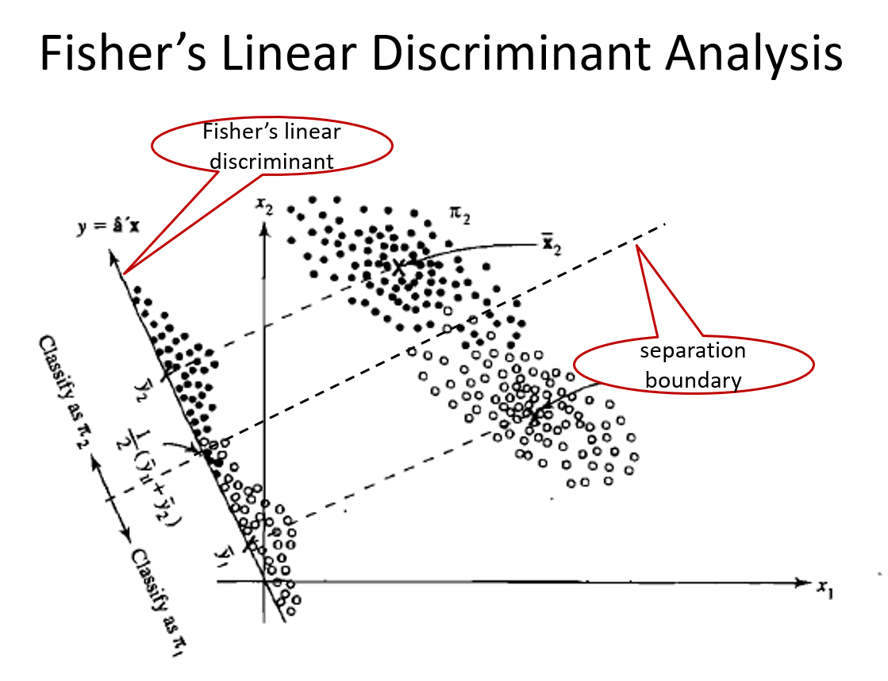

2025-05-14

The maximization problem is \[\operatorname*{argmax}_a \frac{a^T(\bar {\mathbf X}_1 - \bar {\mathbf X}_2)(\bar {\mathbf X}_1 - \bar {\mathbf X}_2)^Ta}{a^T \boldsymbol \Sigma a}\]
Use an argument similar to PCA, such \(a\) is the first eigenvector of \(\boldsymbol \Sigma ^{-1}(\bar {\mathbf X}_1 - \bar {\mathbf X}_2)(\bar {\mathbf X}_1 - \bar {\mathbf X}_2)^T\).
We can show that \(a=\mathbf S_p^{-1}(\bar {\mathbf X}_1 - \bar {\mathbf X}_2)\).
The linear function \[f(x)=a^T x \mbox{ where } a=\mathbf S_p^{-1}(\bar {\mathbf X}_1 - \bar {\mathbf X}_2)\] is called Fisher’s linear discriminant function.
Consider an observation \(X_0\). We compute \[f(X_0)=a^T X_0\] where \(a=\mathbf S_p^{-1}(\bar {\mathbf X}_1 - \bar {\mathbf X}_2)\)
Let \[m=a^T \frac{\bar {\mathbf X}_1 + \bar {\mathbf X}_2}{2}=\boldsymbol (\bar {\mathbf X}_1 - \bar {\mathbf X}_2)^T \mathbf S_p^{-1}\frac{\bar {\mathbf X}_1 + \bar {\mathbf X}_2}{2}\]
Allocate \(X_0\) to
The first linear discriminant is the linear function that maximizes \(F(a)\). It can also be shown that the first linear discriminant is given by the first eigenvector of \(\mathbf W ^{-1} \mathbf B\), i.e., \[Y_{ij}^{(1)}=\gamma_1^T X_{ij}\] where \(\gamma_1\) is the first eigenvector of \(\mathbf W ^{-1} \mathbf B\).
Similarly, for \(k=1, \cdots, rank(\mathbf B)\), the \(k\)th linear discriminant is given by the \(k\)th eigenvector of \(\mathbf W ^{-1} \mathbf B\)
\[Y_{ij}^{(k)}=\gamma_k^T X_{ij}\]
Let \(X_0\) be a new observation. We allocate it to the group with the minimum distance defined by the Euclidean distance in space spanned by the linear discriminants.
Calculate \(Y_0^{(k)}=\gamma_k^T X_0\), the projection of \(X_0\) to the \(k\)th linear discriminant for \(k=1, \cdots, rank(B)\).
Calculate the distance between \((Y_0^{(1)}, \cdots, Y_0^{(rank(B))})\) and \((\bar Y_{i.}^{(1)}, \cdots, \bar Y_{i.}^{(rank(B))})\)
\[D^2(X_0, i) = \sum_{k=1}^{rank(B)} [Y_0^{(k)} - \bar Y_{i.}^{(k)}]^2\]
Let’s consider a two-class classification problem with \(n_1\) and \(n_2\) observations in classes 1 and 2, respectively.
Suppose we have two independent random samples
Sample mean vectors: \[\bar {\mathbf X}_1=\frac{1}{n_1}\sum_{j=1}^{n_1}X_{1j}, \bar {\mathbf X}_2=\frac{1}{n_2}\sum_{j=1}^{n_2}X_{2j}\]
Remark: the sample mean vectors are the MLE of the corresponding mean vectors
MLE of covariance matrices \[\hat {\boldsymbol\Sigma}_1 = \frac{n_1-1}{n_1}S_1, \hat {\boldsymbol\Sigma}_2 = \frac{n_2-1}{n_2}S_2\] where \(S_i\) is the sample covariance matrix for sample \(i\).
Likelihood functions \[\begin{aligned} L_1(\boldsymbol \mu_1, \boldsymbol \Sigma_1) \propto |\boldsymbol\Sigma_1|^{-1/2} exp\{-\frac{1}{2} (x-\boldsymbol \mu_1)^T \boldsymbol \Sigma_1^{-1} (x-\boldsymbol \mu_1)\}\\ L_2(\boldsymbol \mu_2, \boldsymbol \Sigma_2) \propto |\boldsymbol\Sigma_2|^{-1/2} exp\{-\frac{1}{2} (x-\boldsymbol \mu_2)^T \boldsymbol \Sigma_2^{-1} (x-\boldsymbol \mu_2)\} \end{aligned}\]
\[l_1 - l_2=-\frac{1}{2}log(\frac{|\boldsymbol\Sigma_1|}{|\boldsymbol\Sigma_2|}) - \frac{1}{2} [(x-\boldsymbol \mu_1)^T \boldsymbol \Sigma_1^{-1} (x-\boldsymbol \mu_1) - (x-\boldsymbol \mu_2)^T \boldsymbol \Sigma_2^{-1} (x-\boldsymbol \mu_2)]\]
\[(x-\boldsymbol \mu_1)^T \boldsymbol \Sigma_1^{-1} (x-\boldsymbol \mu_1) - (x-\boldsymbol \mu_2)^T \boldsymbol \Sigma_2^{-1} (x-\boldsymbol \mu_2) = log(\frac{|\boldsymbol\Sigma_2|}{|\boldsymbol\Sigma_1|})\]
For the \(i\)th group, we compute a quadratic score, which is defined as
\[Q_i(x)=(x-\bar {\mathbf X}_i)^T \mathbf S _i^{-1} (x-\bar {\mathbf X}_i)+ log(|\mathbf S_i|)\]
Allocate \(x\) to the class with the minimum quadratic score
True
Pred setosa versicolor virginica
setosa 50 0 0
versicolor 0 48 1
virginica 0 2 49 True
Pred setosa versicolor virginica
setosa 50 0 0
versicolor 0 48 1
virginica 0 2 49Risk of a classifier \(\delta\) \[\begin{aligned} R(\delta, z)&=\Pr [\delta(X)\not= Z|Z=z]=\mathbb E_{X|z} [\mathbb I_{\delta(X)\not= Z}|Z=z]\\ &=\left\{ \begin{array}{cc} \Pr[\delta(X)=0|z=1] & \mbox{ if } z=1\\ \Pr[\delta(X)=1|z=0] & \mbox{ if } z=0 \end{array}\right. \end{aligned}\]
The posterior risk of \(\delta\) \[\begin{aligned} PR(\delta(x)) &= \Pr[\delta(x)\not= Z|x]=\mathbb E_{Z|x} [\mathbb I_{\delta(X)\not= Z}|X=x]\\ &=\left\{ \begin{array}{cc} \Pr[Z=0|x] & \mbox{ if } \delta(x)=1\\ \Pr[Z=1|x] & \mbox{ if } \delta(x)=0 \end{array}\right. \end{aligned}\]
Bayes risk \(B(\delta)=\Pr [\delta(X)\not= Z]\).
Note that \[B(\delta)=\Pr [\delta(X)\not= Z]=\mathbb E_{XZ} [\mathbb I_{\delta(X)\not= Z}]=E_X[PR(\delta, X)]=E_Z[R(\delta, Z)]\]
Rewrite the Bayes risk \[\begin{aligned} B(\delta) &=\Pr [\delta(X)\not= Z]\\ &=\Pr [\delta(X)=1, Z=0] + \Pr [\delta(X)=0, Z=1]\\ &=\Pr [\delta(X)=1| Z=0]\Pr[Z=0] + \Pr [\delta(X)=0| Z=1] \Pr[Z=1]\\ &=\pi \Pr [\delta(X)=0| Z=1]+ (1-\pi)\Pr [\delta(X)=1| Z=0] \end{aligned}\]
The above expression is baesd on the fact \[B(\delta)=\mathbb E_{XZ} [\mathbb I_{\delta(X)\not= Z}]\]
\[\delta^*(x)=\left\{ \begin{array}{cc} 1 & \mbox{ if } \frac{\Pr(Z=1|x)}{\Pr(Z=0|x)}>1\\ 0 & \mbox{ if } \frac{\Pr(Z=1|x)}{\Pr(Z=0|x)}<1 \end{array}\right.\]
We say \(\delta^*(x)\) is the Bayes classification rule \[\delta^*(x)=\left\{ \begin{array}{cc} 1 & \mbox{ if } \frac{\Pr(Z=1|x)}{\Pr(Z=0|x)}>1\\ 0 & \mbox{ if } \frac{\Pr(Z=1|x)}{\Pr(Z=0|x)}<1 \end{array}\right.\]
Computation \[\begin{aligned} \frac{\Pr(Z=1|x)}{\Pr(Z=0|x)} & \overset{\mbox{Bayes' theorem}} = \frac{\frac{f(x|z=1)\Pr(Z=1)}{f(x)}}{\frac{f(x|z=0)\Pr(Z=0)}{f(x)}}\\ & = \frac{f(x|z=1)}{f(x|z=0)}\frac{\pi}{1-\pi} \end{aligned}\]
A short review of Bayes’ theorem is on next slide. Feel free to skip if you are very familiar with it already
\[\begin{aligned} \frac{f(x|z=1)\pi}{f(x|z=0)(1-\pi)} &=\frac{f(x|\mu_1=1,\sigma^2)\pi}{f(x|\mu_0=0, \sigma^2)(1-\pi)}\\ &=\frac{\frac{1}{\sigma\sqrt{2\pi}}exp\{-\frac{1}{2\sigma^2}(x-1)^2\}} {\frac{1}{\sigma\sqrt{2\pi}}exp\{-\frac{1}{2\sigma^2}(x-0)^2\}}\frac{\pi}{1-\pi}\\ &= exp\{\frac{1}{2\sigma^2} (2x-1) \}\frac{\pi}{1-\pi} \end{aligned}\]
The classification boundary is \[\begin{aligned} exp\{\frac{1}{2\sigma^2} (2x-1) \} =(1-\pi)/\pi &\Leftrightarrow \frac{1}{2\sigma^2} (2x-1)=log((1-\pi)/\pi)\\ &\Leftrightarrow x=\sigma^2 log((1-\pi)/\pi)+0.5 \end{aligned}\]
The boundary is linear!
Suppose the two underlying distributions are \(N(\boldsymbol\mu_1, \boldsymbol \Sigma)\) and \(N(\boldsymbol\mu_2, \boldsymbol \Sigma)\).
The boundary is \[-\frac{1}{2}(x-\boldsymbol\mu_1)^T \boldsymbol\Sigma^{-1}(x-\boldsymbol\mu_1) + \frac{1}{2}(x-\boldsymbol\mu_1)^T \boldsymbol\Sigma^{-1}(x-\boldsymbol\mu_1)\\ =log(\frac{1-\pi}{\pi})\] which is equivalent to
\[(\boldsymbol\mu_1 -\boldsymbol\mu_2)^T \boldsymbol\Sigma^{-1}x = (\boldsymbol\mu_1 -\boldsymbol\mu_2)^T\boldsymbol\Sigma^{-1}\frac{\boldsymbol\mu_1 + \boldsymbol\mu_2}{2} + log(\frac{1-\pi}{\pi})\]
In practice, we substitute the unknown parameters by their estimates \[(\bar {\mathbf X}_{1.} -\bar {\mathbf X}_{2.})^T\boldsymbol\Sigma^{-1}x = (\bar {\mathbf X}_{1.} -\bar {\mathbf X}_{2.})^T \boldsymbol\Sigma^{-1}\frac{\bar {\mathbf X}_{1.} + \bar {\mathbf X}_{2.}}{2} + log(\frac{1-\pi}{\pi})\]
Recall that in LDA the linear boundary is \[a^Tx=a^T\frac{\bar {\mathbf X}_{1.} + \bar {\mathbf X}_{2.}}{2}\] Therefore, Bayes’ classification is the same as the LDA when \(\pi=1/2\).
Similarly, in a g-class problem, LDA is the same as Bayes classification under the assumptions (1) multivariate normality, (2) equal covariance, and (3) uniform prior probabilities.
The classification boundary is \[(\frac{1}{2\sigma_0^2}-\frac{1}{2\sigma_1^2})x^2 + \frac{x}{\sigma_1^2}-\frac{1}{2\sigma_1^2}=log[ \frac{1-\pi}{\pi}\frac{\sigma_1}{\sigma_0}] \]
It is quadratic!
mean1 <- 1
var1 <- 0.25
mean0 <- 0
var0 <- 0.64
weight1 <- 0.5
weight0 <- 1 - weight1
# doesn't seem to be correct
x <- seq(-2, 3, length.out = 1000)
fx=(1/var0 - 1/var1)/2*x^2 + x/var1 - 1/2/var1 - log(weight0*sqrt(var1)/weight1/sqrt(var0))
plot(x, fx, type="n")
lines(x[fx>0], fx[fx>0], col="blue")
lines(x[fx<0], fx[fx<0], col="green")
abline(h=0)Risk of a classifier \(\delta\) \[R(\delta, z)=\mathbb E_{X|Z=z} [L(\delta(X), z)]=\left\{ \begin{array}{cc} C(0|1)\Pr[\delta(X)=0|z=1] & \mbox{ if } z=1\\ C(1|0)\Pr[\delta(X)=1|z=0] & \mbox{ if } z=0 \end{array}\right.\]
The posterior risk of \(\delta\) \[\begin{aligned} PR(\delta(x)) &= \mathbb E_{Z|x}[L(\delta(x), Z)]\\ &=\left\{ \begin{array}{cc} C(1|0)\Pr[Z=0|x] & \mbox{ if } \delta(x)=1\\ C(0|1)\Pr[Z=1|x] & \mbox{ if } \delta(x)=0 \end{array}\right. \end{aligned}\]
\[\begin{aligned} B(\delta) &=\mathbb E_{XZ} [L(\delta(X), Z)]\\ &=L(\delta(X)=1, Z=0)\Pr[\delta(X)=1, Z=0] + L(\delta(X)=0, Z=1)[\delta(X)=0, Z=1]\\ &=C(1|0)\Pr [\delta(X)=1, Z=0] + C(0|1)\Pr [\delta(X)=0, Z=1]\\ &=C(1|0)\Pr [\delta(X)=1| Z=0]\Pr[Z=0] + C(0|1)\Pr [\delta(X)=0| Z=1] \Pr[Z=1]\\ &=C(0|1)\pi \Pr [\delta(X)=0| Z=1]+ (1-\pi)C(1|0)\Pr [\delta(X)=1| Z=0] \end{aligned}\]
\[\begin{aligned} &PR(\delta(x)=0)>PR(\delta(x)=1) \\ &\Leftrightarrow C(0|1)\Pr(Z=1|x)> C(1|0)\Pr(Z=0|x)\\ &\Leftrightarrow \frac{\Pr(Z=1|x)}{\Pr(Z=0|x)}>\frac{C(1|0)}{C(0|1)}\\ &\Leftrightarrow \frac{f(x|z=1)}{f(x|z=0)}>\frac{C(1|0)}{C(0|1)}\frac{1-\pi}{\pi} \end{aligned}\]